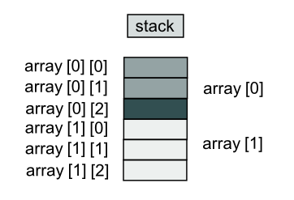
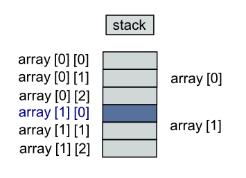
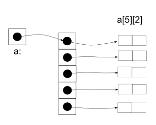
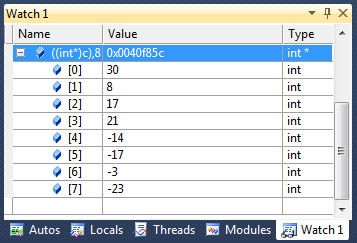

C++ Tutorial
- Pointers III - 2017
Not long time ago, before references came out, the only option programmers had for returning objects from functions was using pointers. References provide a cleaner syntax we may still need to return objects through pointers.
The example below demonstrates returning pointers. Through the returned pointers, the code displays and modifies the values of a vector that holds the name of composers.
#include <iostream> #include <vector> #include <string> using namespace std; string *getComposer(vector*const pVec, int i) { return &((*pVec)[i]); } int main() { vector composers; composers.push_back("Rachmaninov"); composers.push_back("Debussy"); composers.push_back("Wagner"); cout << *(getComposer(&composers;,0)) << endl; string *pStr = getComposer(&composers;,1); cout << *pStr << endl; string str = *(getComposer(&composers;,2)); cout << str << endl; *pStr = "Ravel"; cout << composers[1] << endl; return 0; }
Output is:
Rachmaninov Debussy Wagner Ravel
Let's take a look at the function, getComposer().
string *getComposer(vector*const pVec, int i) {
The string* at the start indicates that the function getComposer() is returning a pointer to a string object which is obviously not the object itself. Now, let's look at the body of the function:
return &((*pVec)[i]);
(*pVec)[i] represents the i-th element of the vector pointed to by pVec. So, &((*pVec)[i]) becomes the address of the i-th element of the vector pointed by pVec.
How about the lines in the main().
cout << *(getComposer(&composers;,0)) << endl;
The code calls getComposer(), which returns a pointer to composers[0]. Then, the line sends the string object pointed by the pointer to cout, and as a result, "Rachmaninov" is displayed.
The next output:
string *pStr = getComposer(&composers;,1); cout << *pStr << endl;
Here, we assign a returned pointer to another pointer, pStr. Then we send *pStr to cout to print out "Debussy".
The third output:
string str = *(getComposer(&composers;,2)); cout << str << endl;
We assign the value pointed to by a returned pointer to a variable. The call to getComposer() returns a pointer to composer[2]. But it can't assign the pointer returned to str because str is a string object not a pointer. Instead, the compiler makes a copy of the string object to which the pointer points and assigns that object to str. An assignment like this one, where an object is copied, is more expensive that the assignment of one pointer to another.
Now, the final out of the code:
*pStr = "Ravel"; cout << composers[1] << endl;
We can modify the object to which a returned pointer points. Because pStr points to the element in position 1 of composer, this code alters composer[1]. As a result, composer[1] is now changed to "Ravel" from "Debussy".
When a pointer is pointing to an valid data, dereferencing such a pointer is a runtime error. Any pointer set to 0 is called a null pointer, and since there is no memory location 0, it is an invalid pointer. We should check whether a pointer is null before dereferencing it. Pointers are often set to 0 to indicate that they are not currently valid. Dereferencing pointers to data that has been erased from memory also usually causes runtime errors as shown below:
int *f()
{
int a = 100;
return &a;
}
a is deallocated when f() exits, so the pointer the function returns is invalid. As with any other variable, the value of a pointer is undefined until it is initialized, so it may be invalid.
Pointers can point to functions even though its use is less common that for pointers that points to variable or objects.
As a start, let's think about what the functions are.
Functions, like data items, have addresses. A function's address is the memory address at which the stored machine language code for the function begins. Normally, it's neither important nor useful for us, but it can be useful to a program. For example, it's possible to write a function that takes the address of another function as an argument. That enables the first function to find the second function and run it.
That approach is more awkward than simply having the first function call the second one directly, but it leaves open the possibility of passing different function addresses at different times. That means the first function can use different functions at different times.
Functions are not objects, and there is no way to copy or assign them, or to pass them as arguments directly. In particular, there is no way for a program to create or modify a function. Only the compiler can do that. All that a program can ever do with a function is call it or take its address.
Function pointers allow referencing functions with a particular signature. For example, to store the address of the standard function abs in the variable my_abs:
int (*my_abs)(int) = abs;
Nevertheless, we can call a function with another function as an argument. What really happens is that the compiler secretly translates such calls so as to use pointers to functions instead of using functions directly.
In fact, C++ allows operations with pointers to functions. The typical use of this is for passing a function as an argument to another function, since these cannot be passed dereferenced.
In other words, pointers to functions behave similarly to any other pointers. Once we have dereferenced such a pointer, however, all we can do with the resulting function is call it - or take the function's address yet again.
Declaration of pointers to functions resembles other declarations. For example, just as we write
int *p;
to say that *p has type int and implying that p is a pointer, we may write
int (*pf)(int);
to say that if we dereference pf, and call it with an int argument, the result has type int. By implication, pf is a pointer to a function that takes an int argument and returns an int result.
A pointer to a function is similar to a pointer to data but it should always be enclosed in parenthesis when using the dereference operator (*) to avoid an compilation error. It then be followed by another parenthesis containing any arguments to be passed to the function when using the *.
Because all that we can do with a function is to take its address or call it, any use of a function that is not a call is assumed to be taking its address, even without an explicit &.
Suppose we have a function with the following prototype:
int f(int); //prototype
Note that it look just like our declaration of pointer to a function:
int (*pf)(int);
Because f is a function, so is (*pf). And if (*pf) is a function, then pf must be a pointer to a function.
The declaration requires the parentheses around *pf to provide the proper operator precedence. Parentheses have a higher precedence than the * operator, so *pf(int) means pf() is a function that returns a pointer while (*pf)(int) means pf is a pointer to a function.
int (*pf)(int); // pf points to a function that returns int int *pf(int); // pf() is a function that returns a pointer to int
Once we declare pf properly, we can assign to it the address of a matching function:
int f(int); int (*pf)(int); pf = f; // pf now points to the f() function
As we discussed in the previous section, (*pf) serves as a name of a function. In other words, function pointers are invoked by name just like normal function calls.
int f(int); int (*pf)(int); pf = f; // pf now points to the f() function int i = f(4); // call f() using the function name int j = (*pf)(4); // call f() using the pointer pf int k = pf(5) // also call f() using the pointer pf
The code below shows very simple usage of function pointer:
#include <iostream>
using namespace std;
int square(int n) {
return n*n;
}
int main()
{
int (*pf)(int);
pf = square;
cout << "square(7) = " << pf(7) << endl;
return 0;
}
Here is another example using a pointer to a function.
#include <iostream>
using namespace std;
int operation (int i, int j, int (*pf)(int,int)) {
int k;
k = (*pf)(i,j);
/* This works, too.
k = pf(i,j)
*/
return k;
}
int addition (int a, int b) {
return a+b;
}
int division (int a, int b) {
return a/b;
}
int main()
{
int m = operation (10, 5, addition);
int n = operation (10, 5, division);
cout << "m = " << m << endl;
cout << "n = " << n << endl;
return 0;
}
Output is:
m = 15 n = 2
Here is an example of an array of pointers to functions or function pointers:
#include <iostream>
using namespace std;
int pass(int n)
{
return n;
}
int square(int n)
{
return n*n;
}
int add(int n)
{
return n+n;
}
int main()
{
int num = 100;
cout << "a function pointer:" << endl;
int (*pf)(int);
pf = pass;
cout << pf(num) << endl;
cout << endl;
cout << "an array of function pointers:" << endl;
int (*apf[3])(int);
apf[0] = pass;
apf[1] = square;
apf[2] = add;
cout << apf[0](num) << endl;
cout << apf[1](num) << endl;
cout << apf[2](num) << endl;
return 0;
}
Output:
a function pointer: 100 an array of function pointers: 100 10000 200
Do you see an error in the following code?
#include <iostream>
using namespace std;
int foo(int x, int y) { return x*y;}
double foo(double x, double y) { return x*y;}
int main()
{
double (*ptr)(int, int);
ptr = foo;
cout << ptr(5, 4) << endl;
return 0;
}
It appears it's an issue related to the function signature. The two foo()s clearly have different function signatures not because of the return types but because of parameter type. In the code, ptr is a pointer to a function that's returning double. However, when we try to assign foo() to the pointer, the return type should be a int not double. So, the 2nd line in main() is wrong or ill-formed.
The constant NULL is a special pointer value indicating that the pointer points to nothing. It turns out to be convenient to have a well defined pointer value which represents the idea that a pointer does not have an object it is pointing to. It is a runtime error to dereference a NULL pointer.
The C language uses the symbol NULL for this purpose. NULL is equal to the integer constant 0, so NULL can play the role of a boolean false. Official C++ no longer uses the NULL symbolic constant. Instead it uses the integer constant 0 directly and calls it null pointer. C++ guarantees that the null pointer never points to valid data, so it is often used to indicate failure for operators or functions that otherwise return valid pointers.
int * p; p = 0; if(p != 0) // Is p valid? if(p) // Is p valid?
Deleting the null pointer doesn't do anything, and it's harmless:
int *p = 0; delete p; // OK: no action ... delete p; // OK: no action
Unlike deleting a null pointer twice, deleting a regular pointer twice is a bad mistake:
int *p = new int(20); delete p; // OK: p points to an object created by new delete p; // error: p points to memory owned by the memory manager
We have two issues regarding the second delete:
- We no longer own the object pointed to. So, the free-store manager may have changed its internal data structure in such a way that it can't correctly execute delete p again.
- The free-store manager may have recycled the memory pointed to by p so that p now points to another object; deleting that other object will cause error in our program.
- null pointer
- NULL is defined as (void *)0.
- A null pointer is a value that any pointer may take to represent that it is pointing to "nowhere".
- A null pointer refers to the value stored in the pointer itself .
- void pointer
- A void pointer is a special type of pointer that can point to somewhere without a specific type.
- A void pointer refers to the type of data it points to.
There is no such thing as a null reference. A reference must always refer to some object. As a result, if we have a variable whose purpose is to refer to another object, but it is possible that there might not be an object to refer to, we should make the variable a pointer, because then we can set it to null. On the other hand, if the variable must always refer to an object, i.e., if our design does not allow for the possibility that the variable is null, we should make the variable a reference.
Before we look at the void*, let's briefly review the memory allocation with respect to the new operator:
- The new operator returns a pointer to the allocated memory.
- A pointer value is the address of the first byte of the memory.
- A pointer points to an object of a specified type.
- A pointer does not know how many elements it points to.
The type void* means "pointer to some memory that the compiler doesn't know the type of."
We are using void* when we want to transmit an address between pieces of code that really don't know each other's type.
Normally we use it in the following cases:
- A type of pointer that points to memory without knowing what kinds of objects reside in that memory.
- An operation to tell the compiler what kind of type to assume for memory pointed to by one of those pointers.
There are no objects of type void. but we use void to mean no value returned:
void v; // error because there are no object of type void void v(); // v() return nothing - v() does not return an object of type void
A pointer to any object type can be assigned to a void*:
void* ptr1 = new int; //OK: int* converted to void* void* ptr2 = new double[100] //OK: double* converted to void*
Because the compiler doesn't know what a void* points to, we should let the compiler know:
void function(void *pvoid)
{
void* pvoid2 = pvoid; // copying is OK (copying is what void*s are for)
double* pd = pvoid; // error: cannot convert void* to double*
*pvoid = 7; // error: cannot dereference a void*
int* pi = static_cast<int*>(pvoid) // OK: explicit conversion
}
For more info on void*, goto Pointers II- void Pointers.
When a pointer is first allocated, it does not have an object it is pointing to. The pointer is said to be uninitialized or simply bad.
A dereference operation on a bad pointer is a serious runtime error. If we are lucky, the dereference operation will crash or halt immediately. If we are unlucky, however, the bad pointer dereference will corrupt a random area of memory, slightly altering the operation of the program so that it goes wrong some indefinite time later.
Each pointer must be assigned an object before it can support dereference operations. Before that, the pointer is bad and must not be used.
A bad pointer is really just a pointer which contains a random address. In other words, it is just like an uninitialized int variable which starts out with a random int value. The pointer has not yet been assigned the specific address of a valid object. This is why dereference operations with bad pointers are so unpredictable. They operate on whatever random area of memory they happen to have the address of.
Bad pointers are very common, and actually every pointer starts out with a bad value. Correct code overwrites the bad value with a correct reference to an object, and thereafter the pointer works fine.
There is nothing automatic that gives a pointer a valid object. Instead, it is very easy to omit this crucial step. We just have to code carefully. If our code is crashing, a bad pointer should be our first suspicion.
Why is it so often the case that programmers will allocate a pointer, but forget to set it to
refer to an object?
The rules for pointers don't seem that complex, yet every programmer
makes this error repeatedly. Why? The problem is that we are trained by the tools we use.
Simple variables don't require any extra setup. We can allocate a simple variable, such as
int, and use it immediately. The built-in variable may be used once it is declared.
However, pointers look like simple variables but they require the extra initialization before we use them. It's unfortunate, in a way, that pointers happen look like other variables, since it makes it easy to forget that the rules for their use are very different.
Pointers in dynamic languages such as LISP and Java work a little differently. The run-time system sets each pointer to NULL when it is allocated and checks it each time it is dereferenced so that code can still exhibit pointer bugs, but they will halt politely on the offending line instead of crashing haphazardly like C. As a result, it is much easier to locate and fix pointer bugs in dynamic languages. The run-time checks are also a reason why such languages always run at least a little slower than a compiled language like C/C++.
For simple pointers and arrays, go to Pointers and Arrays.
C does not have true multidimensional arrays. However, we can have arrays of arrays. In other words, a two-dimensional array is actually a one-dimensional array, each of whose element is an array. It should be written as:
array[i][j] /* [row][[col] */
not
array[i,j] /* error */
The elements are stored by rows, so the columns varies fastest as elements are accessed in storage order. For example, array[2][3] is stored like this:
array[0][0], array[0][1], array[0][2], array[1][0], array[1][1], array[1][2]

To access a value in a multidimensional array, the computer treats each subscript as accessing another subarray within the multidimensional array. For example, in the two-by-three grid, the expression array[0] actually refers to the subarray highlighted in the picture above. When we add a second subscript, such as array[0][2], the computer is able to access the correct element by looking up the second subscript within the subarray
For the following 2-D array:
int a[][6] = { {2,5,7,9,14,16},
{3,6,8,10,15,21},
{4,7,9,15,22,35},
{7,8,9,22,40,58} };
We can get several info on that array:
# of elements size: sizeof(a)/sizeof(int) = 24 # of columns: sizeof(*a)/sizeof(int) = 6 # of columns: sizeof(a[0])/sizeof(int) = 6 # of rows: sizeof(a)/sizeof(a[0]) = 4
If we need to determine the dimensions of a multidimensional array at run time, we can use a heap_based array. Just as a single-dimensional dynamically allocated array is accessed through a pointer, a multidimensional dynamically allocated array is also accessed through a pointer.
int** allocateArray(int iDim, int jDim)
{
int** pArray = new int*[iDim]; // Allocate first dimension
for (int i = 0; i < iDim; i++) {
pArray[i] = new int[jDim]; // Allocate ith subarray
}
return pArray;
}
void releaseArray(int** pArray, int iDim)
{
for (int i = 0; i < iDim; i++) {
delete[] pArray[i]; // Delete ith subarray
}
delete[] pArray; // Delete first dimension
}
int main(int argc, char** argv)
{
int iSize = 5, jSize = 2;
int **ptrArray = allocateArray(iSize,jSize);
releaseArray(ptrArray, iSize);
}
We must start by allocating a single contiguous array for the first subscript dimension of a heap-based array. Each element of that array is actually a pointer to another array that stores the elements for the second subscript dimension. This layout for a five-by-two dynamically allocated array is shown in the picture below.
We can allocate the first dimension array just like a single-dimensional heap-based array. Because the compiler doesn't allocate memory for the subarrays for us, the individual subarrays must be explicitly allocated as shown in the code above.

When a two-dimensional array is passed as an argument, the base address of the caller's array is again sent to the function. However, we cannot leave off the sizes of both of the array dimensions. we can omit the size of the first dimension (the number of rows), but not the second (the number of columns).
This is because what we're passing is a pointer to an array of rows. In other words, in the computer's memory, C++ stores two-dimensional arrays in row order. Thinking of memory as one long line of memory cells, the first row of the array is followed by the second row, which is followed by the third, and so on.

To locate array[1][0] in the picture above, a function that receives array's base address must be able to determine that there are three elements in each row. In other words, function needs to know that the array has three columns. Therefore, the declaration of a parameter must always state the number of columns:
void f(int array[][3])
{
...
}
For example, if we pass an array a[5][2] to a function as in the picture below, we do this:
caller
f(a);
The function declaration, then looks like this:
f(int a[5][2]){...}
or since we are passing a pointer to objects that are arrays of 2 integers, we can use the following:
f(int a[][2]){...}
Since a[] is equivalent to (*a), we can also use:
f(int (*a)[2]){...}
By the same argument that applies in the single-dimension case, the function does not have to know how big the array a is. However, it does need to know what a is an array of. It is not enough to know that a is an array of some arrays. The function must know that a is an array of arrays of 2 integers.

So, in multi-dimensional array, only the first dimension may be missing.
Let's look at the array subscription of the following array:
int a[3][5][7];
It declares an array of integers, with 3x5x7 rank. Actually, a is an array of three things: each thing is an array of five arrays; each of the latter arrays is an array of seven integers.
The following expressions are all legal:
- a
- a[i] - an array of 5 arrays of 7 integers
- a[i][j] - an array of 7 integers
- a[i][j][k]
The array subscripting operation is defined so that E1[E2] is identical to *(E1+E2). So, despite its asymmetric appearance, subscripting is a commutative operation. Because of the conversion rules that apply to + and to arrays, if E1 is an array and E2 an integer, the E1[E2] refers to the E2-th member of E. (from K&R;)
So, a[i][j][k] is equivalent to *(a[i][j]+k). The first subexpression a[i][j] is converted to type pointer to array of integers. The addition (k) involves multiplication by the size of an integer. It follows from the rules that arrays are stored by rows and that the first subscript in the declaration helps determine the amount of storage consumed by an array, buy plays no role in subscript calculation. (also from K&R;).
#include <iostream>
using namespace std;
const int N = 3;
void matmul(int a[][N], int b[][N], int c[][N])
{
for(int i = 0; i < N; i++) {
for(int j = 0; j < N; j++) {
for(int k = 0; k < N; k++) {
c[i][j] = c[i][j] + a[i][k]*b[k][j];
}
}
}
}
int main()
{
int a[][N] = {{1,2,3},
{4,5,6},
{7,8,9}};
int b[][N] = {{9,8,7},
{6,5,4},
{3,2,1}};
int c[N][N] = {0};
matmul(a, b, c);
/* C = {{30,24,18},
{84,69,54},
{138,114,90}} */
return 0;
}
Though a multi-dimensional array is actually one-dimensional, we can treat it as a real multi-dimensional. The following example shows how we pass the array to a function:
void matrix_multiplication(const int a[][3], int row_a,
const int (*b)[4], int row_b, int c[2][4])
{
for(int i = 0; i < row_a; i++)
for(int j = 0; j < 4; j++)
for(int k = 0; k < row_b; k++)
c[i][j] += a[i][k]*b[k][j];
}
int main()
{
int a[2][3]={{6,5,-2},{-1,-4,0}};
int b[][4]={{6,1,7,3},{2,4,-1,5},{8,9,10,11}};
int c[2][4] = {0};
int row_a = 2;
int row_b = 3;
matrix_multiplication(a, row_a, b, row_b, c);
/*
c = {
30 8 17 21
-14 -17 -3 -23
}
*/
return 0;
}
Here, we have the resulting array from Visual Studio by typing in ((int*)c),8 into the watch tab window, where c is the pointer and 8 is number of elements. If we only want to see the last 4 elements, we do ((int*)c+4),4.

Just for reference, the following example is using vector instead of array:
#include <vector>
using namespace std;
void mat_mul(const vector<vector<int> >&a;, int row_a,
const vector<vector<int> >&b;, int row_b,
vector<vector<int> >&c;)
{
for(int i = 0; i < row_a; i++)
for(int j = 0; j < 4; j++)
for(int k = 0; k < row_b; k++)
c[i][j] += a[i][k]*b[k][j];
}
int main()
{
vector<vector<int> > a(2, vector<int>(3));
vector<vector<int> > b(3, vector<int>(4));
vector<vector<int> > c(2, vector<int>(4));
a[0][0] = 6; a[0][1] = 5; a[0][2] = -2;
a[1][0] = -1; a[1][1] = -4; a[1][2] = 0;
b[0][0] = 6; b[0][1] = 1; b[0][2] = 7; b[0][3] = 3;
b[1][0] = 2; b[1][1] = 4; b[1][2] = -1; b[1][3] = 5;
b[2][0] = 8; b[2][1] = 9; b[2][2] = 10; b[2][3] = 11;
int row_a = 2;
int row_b = 3;
mat_mul(a,row_a,b,row_b, c);
/*
c = {
30 8 17 21
-14 -17 -3 -23
}
*/
return 0;
}
- char **argv
argv: a pointer to pointer to char - int (*ptr)[10]
ptr: a pointer to an array of 10 integers - int *ptr[10]
ptr: an array of 10 pointers to integer - void *comp()
comp: a function returning pointer to void - void (*comp)()
comp: a pointer to function returning void
#include <iostream>
#include <vector>
#define N 5
using namespace std;
int main()
{
// array of integers
int *a = (int*)malloc(sizeof(int)*N);
for(int i = 0; i < N; i++) a[i] = i;
// array of pointers to integer
int arr[] = {0,1,2,3,4};
int **ap = (int**)malloc(sizeof(int*)*N);
for(int i = 0; i < N; i++) ap[i] = &arr;[i];
// vector of pointers to integer
vector<int *> apv = vector<int *>(N);
for(int i = 0; i < N; i++) apv[i] = &arr;[i];
return 0;
}
Ph.D. / Golden Gate Ave, San Francisco / Seoul National Univ / Carnegie Mellon / UC Berkeley / DevOps / Deep Learning / Visualization